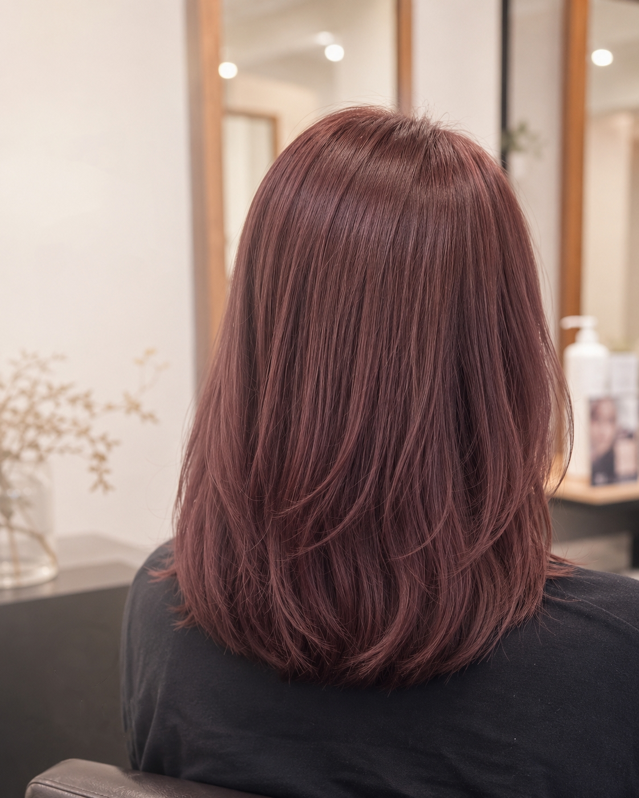
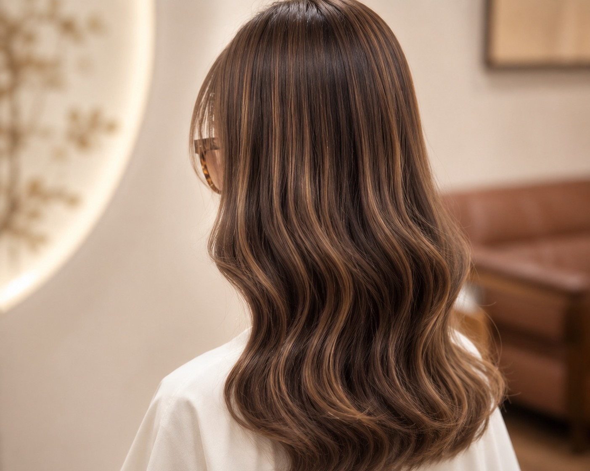
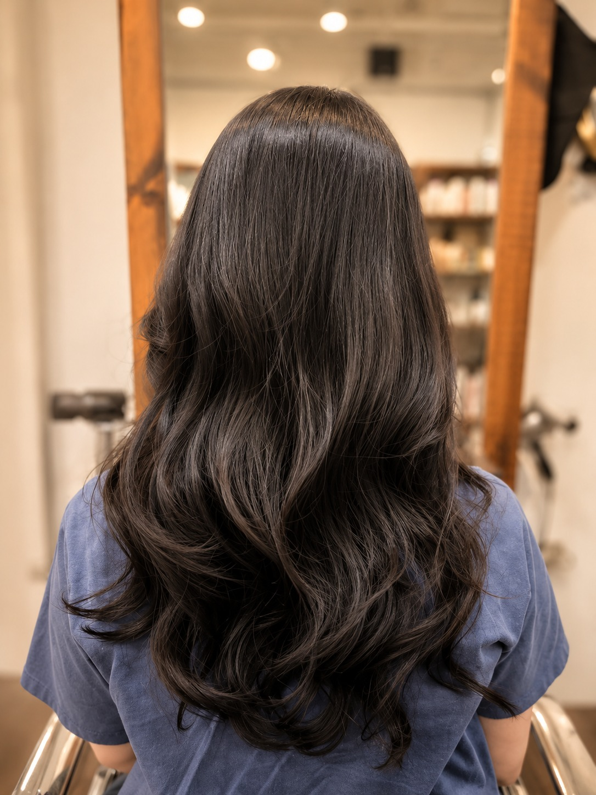
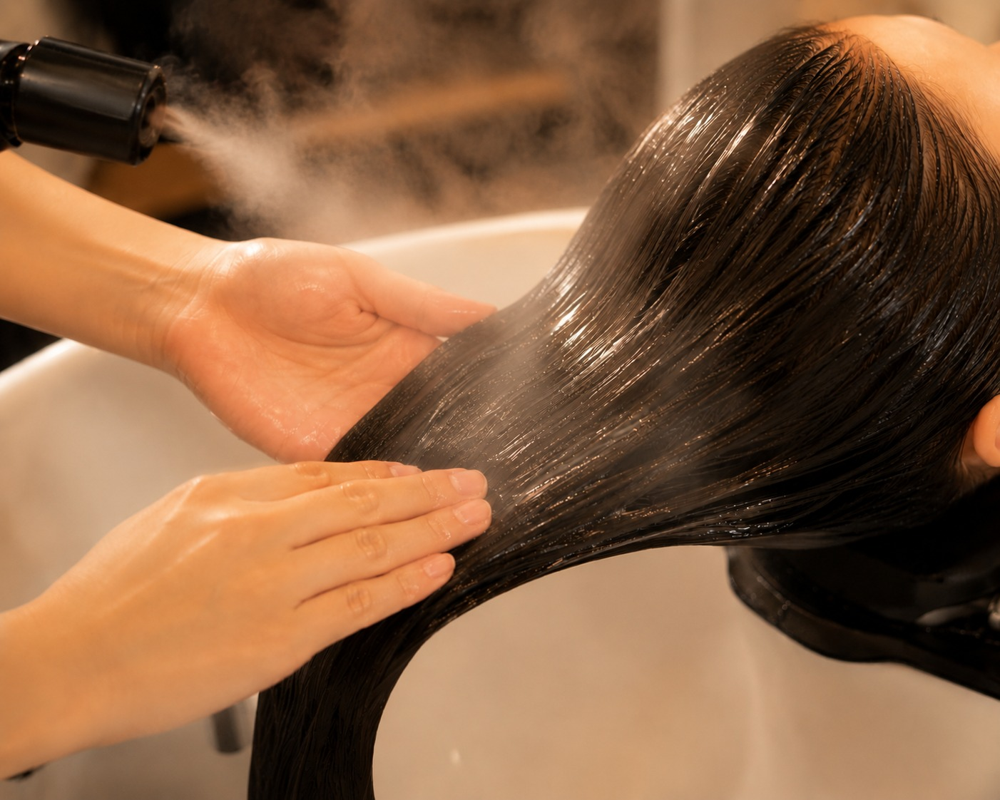
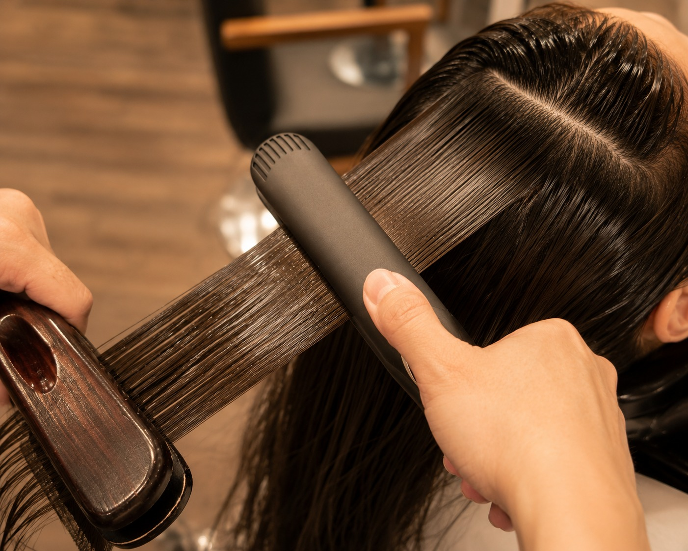
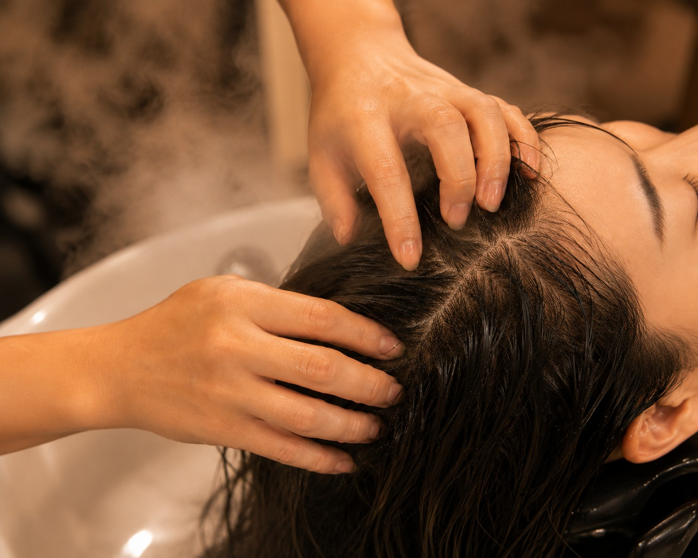

霧感染髮
低調柔和的髮色，適合想提升氣色但不希望過度高調的顧客。
霧棕奶茶色自然亮度
Works Direction
ALICE 的作品方向以顧客的髮質、膚色、生活習慣與整理時間為核心，打造不過度張揚、卻能提升整體質感的髮型。
預約前可傳理想風格照片，設計師會依目前髮況判斷可達成程度與建議流程。

低調柔和的髮色，適合想提升氣色但不希望過度高調的顧客。

以白髮比例、新生髮與原髮色規劃自然銜接，減少補染壓力。

依髮況選擇冷燙、溫塑燙或局部修飾，讓線條自然且好整理。

針對染燙後乾燥、毛躁、缺乏光澤的髮況，安排合適護髮。

改善自然捲、毛躁與蓬亂，保留自然直順而非僵硬線條。

從出油、悶癢、敏感與角栓問題切入，建立舒服的頭皮狀態。
Consultation
設計師會依髮況與可整理時間，協助判斷適合你的髮型方向。